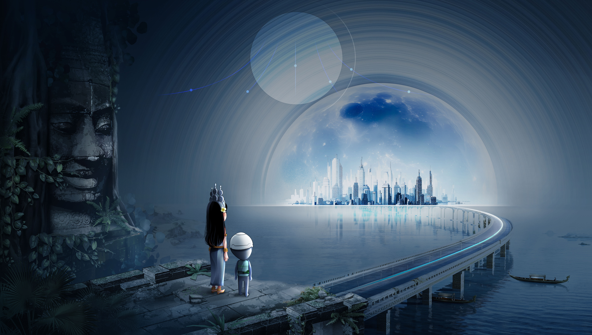
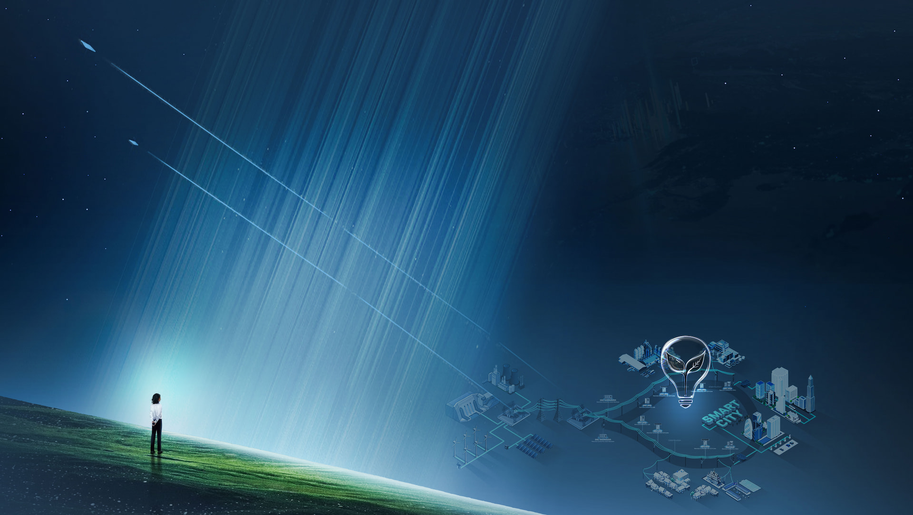
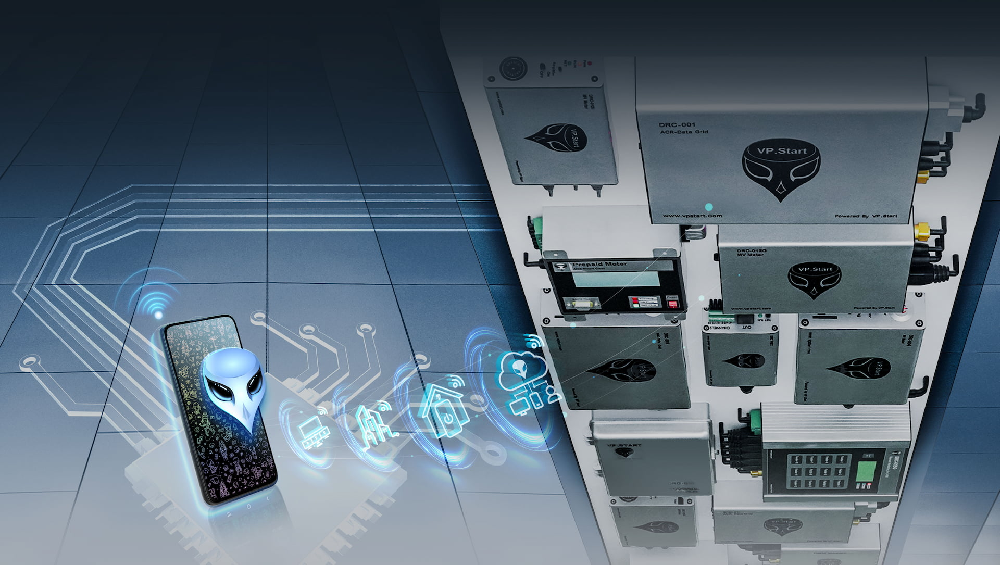
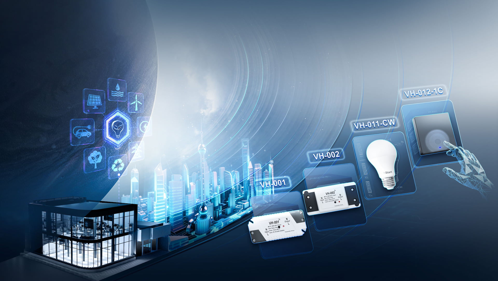

“ Every ROADMAP starts with a problem. Every problem must be there. ”

WHAT IS THE SIMA JOURNEY?
“A sustainable future means sustainability in every aspect of our lives.”
-

Sustainable
Power -

Sustainable
Cities -

Sustainable
Homes -

Sustainable
Connectivity -

Sustainable
Data

What kind of future do you want
for our world?
“We at VP.Start Face the Worldwide Challenges”
We want to live in greener, cleaner, and healthier future.
We want businesses to achieve accelerated
growth sustainably.
We want efficient energy delivery despite geopolitical chaos.

We at VP.Start Provide the Solutions
An integrated eco-sustainability system encompassing energy, data and people.
A reliable energy supply based on real-time, AI-supported data-driven insights.
A powerful overarching connectivity network to unify the sustainability system.

We at VP.Start Build the
Sustainable Future
More environmentally-friendly and energy-efficient industry.
More effective, healthy, and future-ready cities.
More sustainable, less wasteful homes.
“The key to unlocking sustainability is affordable, reliable electric power.”
All are from the power of INNOVATION THROUGH TECHNOLOGY.
Made in Cambodia. Made for the World.